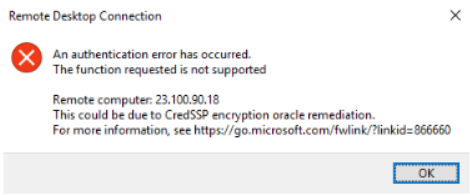
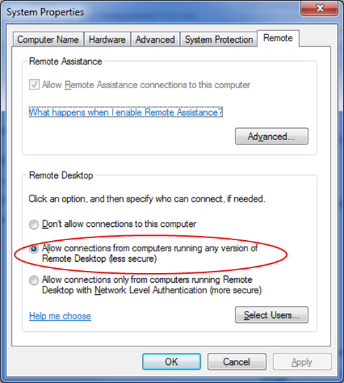

Symptom
When a local computer running Windows attempts to access a Windows ECS using RDP (for example, MSTSC), an identity authentication failure occurs and the desired function is not supported.
- If the error message contains only the information that an identity authentication failure occurs and that the desired function is not supported, rectify the fault by following the instructions provided in Solution.
- If the error message shows that the fault was caused by "CredSSP Encryption Oracle Remediation", as shown in Figure 1, the fault may be caused by a security patch released by Microsoft in March 2018. This patch may affect RDP-based CredSSP connections. As a result, setting up RDP-based connections to ECSs failed. For details, see Unable to RDP to Virtual Machine: CredSSP Encryption Oracle Remediation. Rectify the fault by following the instructions provided in official Microsoft document.
Figure 1 Failed to set up a remote desktop connection
Solution
Modify the remote desktop connection settings on the Windows ECS:
- Log in to the ECS.
- Click Start in the lower left corner, right-click Computer, and choose Properties from the shortcut menu.
- In the navigation pane on the left, choose Remote settings.
- Click the Remote tab. In the Remote Desktop pane, select Allow connections from computers running any version of Remote Desktop (less secure).
Figure 2 Remote settings

- Click OK.